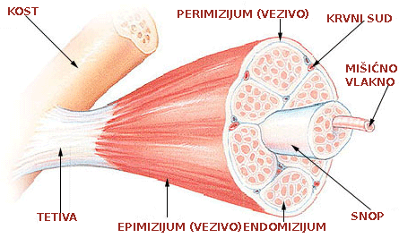

Ovo je još jedno u nizu čestih pitanja koja se postavljaju u vezi trbušnog, tj. orijentalnog plesa. Sve mi želimo da izgledamo što bolje i prirodno je da hoćemo da znamo kakav efekat će neka aktivnost da ima na naš izgled. Kao i sve što je vezano za trbušni, tj. orijentalni ples i ovde vlada neka zbrka. Svi imaju neku poznanicu čije poznanice poznanica je smršala/ugojila se/stomak joj se zategao/opustio od trbušnog plesa.
Pogledajte razne profesionalne igračice širom sveta: imaju najrazličitije stomake, od mršave Didem, preko mišićave Rande, do debeljuškaste Fifi. Dakle, kako ovaj ples utiče na telo? Da bi smo odgovorili na to pitanje, moramo da vidimo šta je zapravo taj „stomak“ i kako tu stvari funkcionišu.
Kada kažemo da neko „ima stomak“ obično mislimo na to da ima salo na stomaku. „Salo“ je sloj masnog tkiva između kože i mišića. Prošle nedelje smo videli da se od plesa i drugih fizičkih aktivnosti salo sagoreva, što znači stanjuje sloj masnog tkiva – ne postoji fizička aktivnost od koje bi se salo povećalo, pa tako ni od trbušnog plesa ne može u tom smislu narasti „stomačić“.
U stomaku se naravno nalaze i unutrašnji organi, ali tu nikakvo „narastanje“ ne može da ima veze sa plesom (osim možda ako ste se bacili na neko zavođenje ;-). Dakle, ostaje trbušni mišić: može li se i kako povećati, zategnuti, opustiti?
Trbušni mišići
Sa prednje strane stomaka nalazi se ravni trbušni mišić (m. rectus abdominis), koji se proteže od donjih rebara do preponskih kostiju. Na površini ovog mišića prelaze tetive koje stvaraju karakteristične „pločice“ – koje svi imaju, ali se vide samo kod onih koji imaju jako malo masnog tkiva na tom delu. Dakle, jačanje trbušnih mišića je jedan proces, a smanjenje masnog tkiva između mišića i kože drugi. Zato čak i debele igračice imaju jake mišiće ispod sala, samo se ne vidi definicija mišića zbog većeg sloja masnog tkiva. Iz istog razloga nijedna vrsta trbušnjaka ili bilo kakvih vežbi za trbušne mišiće direktno ne „stanjuje stomak“, nego jača trbušne mišiće.
Bočno se nalaze kosi trbušni mišići (m. obliquus abdominis externus et internus) koji daju oblik struku. Ispod njih nalazi se poprečni trbušni mišić (m. transversus abdominis).
Ovi mišići učestvuju u izvođenju osnovnih pokreta orijentalnog plesa, ali to ne čine izolovano, nego zajedno sa leđnim, karličnim i prsnim mišićima – tako da suprotno popularnom mišljenju uloga trbušnih mišića nije razlog za naziv „trbušni ples“.
Kako trbušni mišići reaguju na kretanje, to jest opterećenje
Trbušni mišići spadaju u tzv. skeletne mišiće, koji zajedno sa kostima i zglobovima čine sistem organa za kretanje. Svaki skeletni mišić se pripaja kostima na dva mesta (polazište i hvatište) i premošćuje barem jedan zglob. Kada mišić „radi“ (kada se kontrahuje, skuplja) izaziva kretanje u tom zglobu. Tako trbušni mišići izazivaju kretanje u sitnim zglobovima između kičmenih pršljenova – u orijentalnom plesu to su pokreti kao što su talas telom i „kamila“, tvist bokovima, klizanje bokovima i grudnim košem, kontrakcija, osmice i drugo. Zbog specifičnog položaja ravnog trbušnog mišića njime je moguće izvesti i pokrete koji vidno ne pokreću ni jedan zglob – talasanje stomakom i razne akcente.
Skeletni mišići se sastoje od tankih i dugačkih ćelija, tzv. mišićnog vlakna, koji su udruženi u snopove. Više ovih snopova formira mišić. Ovi snopovi daju prugast izgled mišićima – otuda naziv poprečno-prugasti mišići. Pojedinačne ćelije, snopovi i celi mišići obmotani su vezivnom opnom kroz koju prolaze krvni sudovi i nervi. Kroz ove nerve dolazi komanda mišićima da se stegnu (kontrakcija) ili opuste (relaksacija). Kontrakcije skeletnih mišića su snažne, ali kratkotrajne jer se ovi mišići umaraju (za razliku od mišića koji se nalaze u krvnim sudovima ili srčanog mišića koji su neumorni).
Da bi neki skeletni mišić ojačao potrebno je da se vežba pod opterećenjem: to može da znači da se pokreti izvode tim mišićem izvode sa dodatnom težinom (vežbe tegovima), ali i da se neki pokret izvodi mnogo sporije od prirodnog ili slično. Zapravo svaka aktivnost koja izaziva umor u mišićima jača mišiće. Kada je mišić izložen opterećenju nešto većem od onog koje može komotno da podnese dolazi do mikroskopskih naprslina na mišićnom tkivu, koje organizam popuni proteinima iz hrane. Na taj način mišić jača, jer se povećava opseg mišićnih ćelija. Naprotiv, ako se mišići nedovoljno koriste organizam može čak da oduzme proteine iz mišića i oni se stanjuju, slabe. Otuda ona engleska izreka use it or loose it, tj. ako ne koristiš mišić izgubićeš ga.
Međutim, mišići ne samo da jačaju kada su redovno pod opterećenjem, nego se i prilagođavaju vrsti pokreta koji se od njih zahteva. To prilagođavanje utiče na njihov oblik, a time i na formu tela. Sportovi za koje je potrebna velika direktna snaga da se protivnik ili neki rekvizit podigne, gurne, baci – na primer dizanje tegova ili džudo – izgrađuju nabijene, kratke mišiće. Sportovi u kojima se mišići istovremeno opterećuju i istežu – kao gimnastika ili planinarenje – stvaraju izdužene, tanje forme. Isto tako stvaraju se razlike u zavisnosti od toga da li su mišići izloženi dugotrajnom konstatnom opterećenju (npr. trčanje ili plivanje) ili je opterećenje „seckano“ (npr. česte promene pravca, nagli, eksplozivni pokreti – kao u fudbalu ili vaterpolu). Ovo važi za svaku redovnu fizičku aktivnost, ali se najbolje vidi kod sportista jer oni treniraju još od detinjstva – dakle tokom godina kada se telo razvija.
Pokreti orijentalnog plesa zahtevaju da mišići budu snažni, ali istovremeno i fleksibilni. Zato bi sa nabijenim „okraćalim“ mišićima koji su tipični za mnoge sportistkinje, pa i igračice u drugim stilovima, bilo teško pravilno izvesti mnoge pokrete. To je posebno upadljivo kod ravnog trbušnog mišića, s obzirom da se radi o mišiću velike površine, te posebno dolazi do izražaja ta sposobnost da se jedan deo mišića zateže dok je drugi opušten ili čak se isteže (kombinacija tzv. koncentrične i ekscentrične kontrakcije).
Dakle, nema govora o tome da će stomak bukvalno narasti od trbušnog tj. orijentalnog plesa. Međutim, kod osobe koja je veoma mršava, a imala je ranije slabe trbušne mišiće, od plesa ojačao, ali fleksibilan trbušni mišić može da deluje kao da se ugojila. Isto tako, žena koja je počela sa veoma čvrstim, „muškim“ trbušnjacima vremenom će dobiti mišiće koji deluju opuštenije, ali koji će biti i dalje veoma snažni.
Umesto savremene „sportske figure“, orijentalnim, tj. trbušnim plesom može se postići figura koja je istovremeno fit i ženstvena, tzv. „figura peščanog sata“.
Ako vas je do sada u treniranju orijentalnog (trbušnog) plesa sprečavao strah da će vam „stomak narasti“ – nadam se da sam uspela da vas razuverim :-) Ako ste sada spremni pozivam vas na jedno zajedničko putovanje na kome ćete naučiti orijentalni (trbušni) ples.